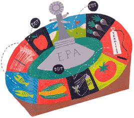

Why is the EPA gambling with our health?
Under the law, the Environmental Protection Agency (EPA) was to have finished a third of the job by August 1999, giving priority to the riskiest pesticides, including 45 organophosphates (OPs), highly effective poisons that kill by inhibiting an enzyme necessary for proper nervous system function. (Some of the more potent organophosphates were used as nerve gases in World War II.) But so far reviews have been finalized for only eight of the OPs; of these, seven have had their registrations canceled and their tolerances, or legal residue limits, revoked.
Reviews for the remaining 37 OPs are now stalled while the EPA figures out how to measure these pesticides' combined risk to human health (as required under the FQPA). Historically, the EPA has assessed each OP as a discrete poison; yet, as nerve agents, all OPs act similarly on the body and their effects are cumulative. Acute exposures can cause symptoms ranging from dizziness, vomiting and headaches to respiratory arrest, convulsions and death. Chronic low-dose exposures have been linked to nervous-system damage, learning disabilities, cancer, fertility problems and birth defects.
Despite the missed '99 deadline, Jack Housenger, associate director of the EPA's special review and reregistration division, insists the OP reassessments are on track. True, most have gone as far as they can go pending a means for calculating the dangers of combined exposures (the EPA has pledged to have a formula in place before this summer). Meanwhile, the discrete, or individual, risk assessments have been updated for nearly all of the organophosphates, and interim decisions reauthorizing, amending or canceling existing uses have been issued for more than a dozen. But even as the agency trumpets its midstream reductions of these controversial pesticides, critics contend the restrictions don't go nearly far enough.
Last summer, when the EPA announced a ban on the pesticide chlorpyrifos (trade name Dursban) for most home and garden uses it seemed a triumph for public health advocates, who had long questioned the safety of this most widely used organophos phate. Upon closer inspection, however, the decision turns out to be a qualified win at best. Chlorpyrifos - a poison that in animal studies has proven hazardous to developing brains and nervous systems - will still be used agriculturally, though not on the too permeable tomato. Some 13 million pounds will continue to be applied annually to corn, grain, fruits, nuts and vegetables. The decision also tem porarily retains Dursban as a termite con trol, allowing spot and local treatments of postconstruction lumber through 2002 and of preconstruction materials through 2005. Use on golf courses and for mosquito sprayings will continue indefinitely. Indeed, Housenger admits an all-out ban is unlikely.
Jay Feldman, executive director of Beyond Pesticides/National Coalition Against the Misuse of Pesticides, a Washington, D.C.-based environmental consortium, counters that anything short of a cancellation is unacceptable. "Our position is that the public should not be exposed to neurotoxic pesticides," says Feldman, who faults the EPA for "regulating by negotiation" with the chemical industry - striking deals that put company profit above public safety. He points specifically to chlorpyrifos, and charges that the EPA worked with Dow Agrosciences, the makers of Dursban, to determine which uses would stay and which would go.
Housenger confirms that the chlorpyrifos restrictions were hammered out in meetings with Dow, but maintains such negotiations serve the public good by preventing lengthy litigation and by speeding removal of dangerous products from the market.
But while the agreement may mean less work for EPA lawyers, it hardly signals a quick exit for chlorpyrifos. Dow was allowed to keep making Dursban through last December, and retailers may continue selling products containing the pesticide through 2001 - with no obligation to warn consumers that its home-use days are numbered. Moreover, chlorpyrifos products purchased on or before December 31 can legally be used until supplies are exhausted.
Housenger defends the long phase-out period, noting that federal law bars the EPA from issuing a pesticide recall except in cases of an emergency suspension. "In order to suspend, we have to deem that there is an imminent hazard," says Housenger, "which is a whole different standard than showing that cancellation is warranted." Besides, he adds, a recall has its own worries: "There's risk in getting the product back up-line - and then there is the issue of disposing of a lot of this product when it is all accumulated in one place." Given the choices, says Housenger, the EPA "thought it best" to allow chlorpyrifos to dissipate in the marketplace.
Dow Agrosciences' involvement in the reassessment of chlorpyrifos is hardly an anomaly. Indeed, the chemical industry is involved in every step of the pesticide registration and tolerance-setting process. Here's how it works: The manufacturer, or "registrant" (i.e., Dow), tells the EPA how much pesticide residue is likely to remain on crops based on company test-sprayings. It either conducts or contracts out federally required toxicity tests to determine if its product may cause cancer, birth defects or other health hazards. The results are submitted to EPA scientists, who analyze the data and draft a preliminary risk assessment. That draft is then bounced back to the man ufacturer for a 30-day review period, during which, accord ing to Housenger, the company can "comment on [the EPA's] risk assessment and provide corrections to it."
I n the case of the widely used organophosphate malathion this back-and-forthing resulted in a substantial lowering of the pesticide's cancer rating. A team of EPA scientists, headed by senior toxicologist Brian Dementi, analyzed the health data provided by ChemiNova, malathion's manufacturer, and concluded that the chemical causes liver tumors in lab animals. The team presented its findings to the EPA's cancer review committee, which deemed malathion a "likely human carcinogen." Dissatisfied with this interpretation, ChemiNova convened a panel of pathologists to reexamine the data and draw its own conclusions. According to Dementi, the panel "severely, remarkably downgraded the initial [tumorogenic] findings," prompting the EPA's cancer committee to change its malathion ruling from "likely human carcinogen" to "suggestive evidence of carcinogenicity."
The change is not trivial. For likely carcinogens, the EPA must perform quantitative risk assessments and impose regulations accordingly. Alternatively, where there is merely suggestive evidence of a carcinogen, the agency can dismiss the danger as insignificant.
Dementi has questioned the outside panel's findings before the EPA's cancer review committee and its Scientific Advisory Panel (SAP), but so far, he says, his concerns have "fallen on deaf ears." Meanwhile, a revised preliminary risk assessment was released for public comment last May, indicating that there was "insufficient evidence to assess the potential [of malathion] for causing cancer in humans."
Among the more common organophosphates, malathion is used on nearly 100 food and fiber crops. It is the third most frequently detected pesticide in our food supply, showing up in about 17% of items tested by the Food and Drug Administration (see " Hidden Ingredients "). It is also regularly used for pest control and in aerial sprayings to combat mosquitoes, as in the well-known 1999-2000 spraying over New York City to combat the West Nile Virus.
Frustrated by the EPA's lethargic (and arguably compromised) review efforts, NCAMP's Feldman fumes that "The EPA has failed so badly in the pesticide arena that it is hard to envision the agency... ever adequately protecting the public."
Indeed, a full five years after the passage of FQPA and eight years after the initial NAS report that prompted it, OPs continue to account for roughly half of the pesticides sold in America. Some 60 million pounds are applied annually to 60 million acres of U.S. cropland, while another 17 million pounds go to insect control as well as home lawn and garden care.
With the EPA hobbled by inefficiencies and questionable alliances, say Feldman and others, the onus is on individuals to protect themselves. First, know what you're eating (see " What's Used Where ," below). Second, petition your congressmen and the EPA for a universal ban on organophosphate pesticides. For more information, contact the EPA's Office of Pesticide Programs is at (703) 308-8000 or write to U.S. EPA, Office of Pesticide Programs (7508C), Ariel Rios Building, 1200 Pennsylvania Ave., NW, Washington, D.C. 20460.
Finally, use your cash to support organic agriculture. So long as the EPA snuggles up to the chemical giants, it's up to consumers to keep the giants out of the kitchen.
What's Used Where
Education is key to protecting yourself from unwanted pesticides. Here are a few Web sites to check out:
• FoodNews.org ( www.foodnews.org ) by the Environmental Working Group calculates pesticide content and attendant health risks for selected foods.
• The Pesticide Action Network Pesticide Database ( www.pesticideinfo.org ) offers information on 100,000 formulated pesticide products.
• EPA Office of Pesticide Programs ( www.epa.gov/pesticides/food/viewtols.htm ) tell which pesticides are approved, and in what amounts, for use on your favorite foods.
Related info:
Banned ... but not till it's gone
Hidden Ingredients
|
 |
|
|